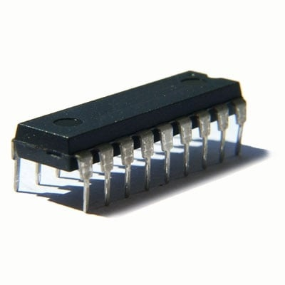
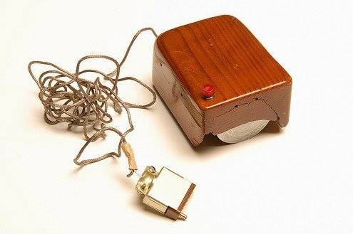

В зависимост от елементите, използвани за конструирането им, електронните компютри се делят на четири поколения: Първо поколение (1949 – 1958 г.): Основен конструктивен елемент са електронновакуумните лампи. Машините са с огромни размери, консумират много енергия и отделят топлина. Скорост: 50 000 – 200 000 операции в секунда. Входни устройства: перфокарти и магнитни ленти. Второ поколение (1959 – 1963 г.): Електронните лампи са заменени от транзистори. Компютрите стават по-малки, по-икономични и по-бързи (200 000 – 1 000 000 операции в секунда). Появяват се първите магнитни дискове, модеми и над 200 езика за програмиране. Трето поколение (1963 – 1970 г.): Изграждат се на базата на интегрални схеми. Скоростта скача до 10 000 000 операции в секунда. Появяват се операционната система Unix, мултипрограмирането, първата компютърна мишка, джобният калкулатор и първият микропроцесор. Четвърто поколение (след 1971 г.): Използват се интегрални схеми с висока степен на интеграция (микропроцесори) върху силициева подложка. Изчислителната мощност нараства над 1 000 000 пъти спрямо първите компютри. |
  |